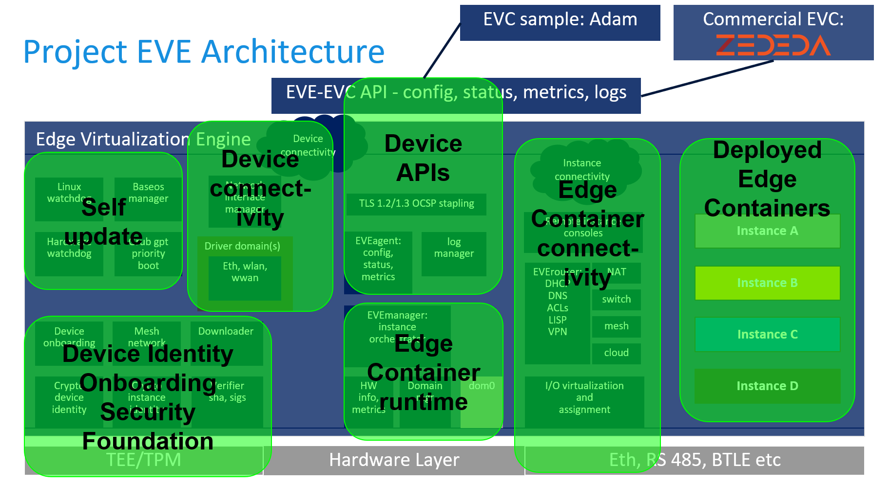

层次
Type-1 hypervisor
- EVE底层是一个基于Xen虚拟机的Type-1 hypervisor
- 可以在边缘设备上运行多种操作系统，是其边缘化的基础
- 因为是虚拟机，所以可以运行任何边缘计算框架，包括EdgeX Foundry, Fledge, Azure IoT Edge, AWS Greengrass Core等
- 因为是虚拟机，所以隔离性好，安全性高
Device connectivity and management interfaces
通过网络接口连接EVE中的应用（虚拟机）
- device network interface
- drivers for ethernet and wireless networking
- an API for connecting EVE to centralized management services
Operating system services
a hardened root-of-trust operating system
为EVE中的应用提供以下功能：
- self update
- identity management：身份验证
- security：安全（主要指内存隔离和内存/存储加密）
- networking services
Edge container runtime
容器运行控制/容器编排工具
- domain management：域控制
- instance orchestration：实例编排
- virtualized IO
- inter instance networking：实例间的动态联网
- remote instance consoles
架构

Device Identity Onboarding and Security Foundation
- 设备以公钥为ID (as X.509 certificate)
- Generated by the TPM (trusted platform module) if available
- 启动时扫描序列号
- User adds serial number (plus onboarding token) to controller
- Device will attempt to register its device cert on first boot
- 设备私钥用于磁盘加密、远程认证等
- 理想情况是设备公私钥在制造时即写入，用户在购买设备时收到一个证书才能在设备上编程
Self Update
- Update all of EVE including hypervisor
- 处理错误
- Power failure when writing to flash
- Bad new EVE image resulting in not being able to connect to controller
- checking image signature
- Option for user to commit to new EVE version (未完成)
- ???Implemented using dual partitions, hardware and software watchdog
- ???Currently using grub for fallback booting; being generalized
- ???使用GBT（GUID分区表）
Device connectivity
- 设备必须与控制器相连
- 控制器控制容器启停
- 设备必须与控制器的连接可以冗余
- 容器间连接默认使用DHCP，可以设置静态IP
- 可以设置HTTP代理
- 网络设置可以由控制器进行修改
EVE Device API
所有API均由ProtoBuf定义，TLS传输
| 方法 | 接口URL | 功能 |
|---|---|---|
| POST | api/v1/edgedevice/register | 设备注册 |
| GET | api/v1/edgedevice/ping | for connectivity test |
| GET | api/v1/edgedevice/config | for complete device + instance config |
| POST | api/v1/edgedevice/info | for triggered device/instance status |
| POST | api/v1/edgedevice/metrics | 设备定期上报状态 |
| POST | api/v1/edgedevice/logs | for logs from microservices on device |
| POST | api/v1/edgedevice/flowlog | for ECO network flows logs |
Edge Container runtime
- 基于Xen虚拟化
- 可以直接运行Docker容器（基于rkt）
- 提供一套设置容器连接的工具链
What is an “edge container”?
Edge containers are virtual machines with a manifest that describes the runtime environment including device resource and connectivity requirements.
Edge Container Image (ECI)
类比docker Image，是EVE容器的模板，支持传统VMs, OCI/docker Image格式和Unikernels
Can I use Docker containers with EVE?
You can run a virtual machine with Linux that runs Docker Install within it.
Edge Container Object (ECO)
类比由docker Image生成的docker Container，是由ECI生成的运行容器
Edge Container Connectivity
- 默认通过NAT
- 可以设置USB或者COM口连接
- 可以设置交换网络
- 可以设置云网络连接到AWS VPN或者Azure VPN等
- 可以设置mesh network实现Edge-to-Edge连接